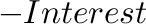
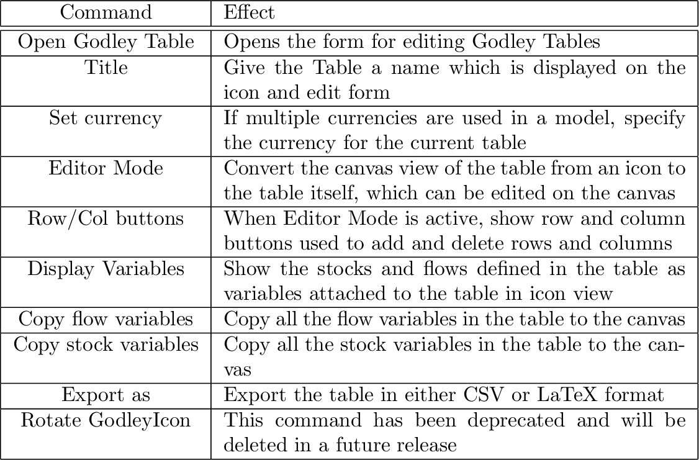
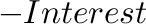
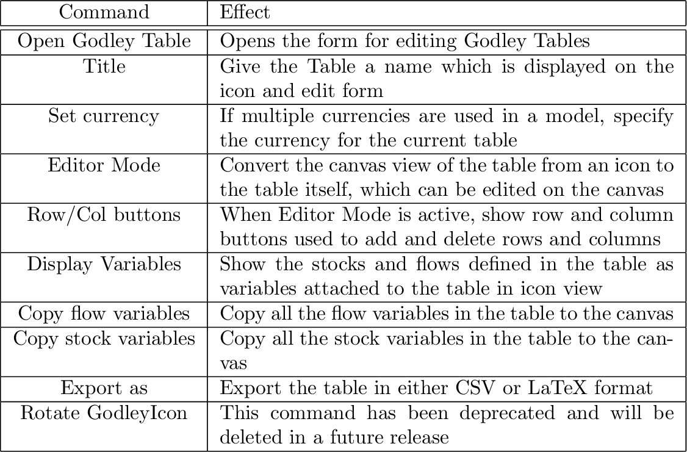

The Godley Table Form has a context menu which assists in the rapid completion of a multi-Godley-Table model. Entries can be copied from one cell and pasted into another, and Flows in the model can be inserted into a Godley Table cell as a positive or a negative entry:

It is also possible to record all as-yet-unclassified flows as additions
to or substractions from the Equity of the relevant sector--which
is often (but not always) what is needed to complete a set of interlocking
Godley Tables. In the figure above,  and 
are shown in the  checksum column. Choosing ``Balance equity''
from the context menu transfers both these entries to the Equity column.
and 
are shown in the  checksum column. Choosing ``Balance equity''
from the context menu transfers both these entries to the Equity column.